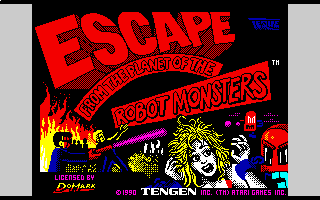
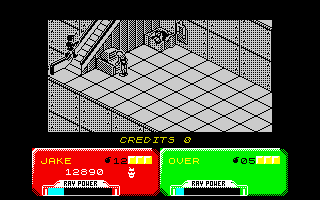
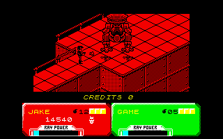
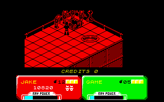
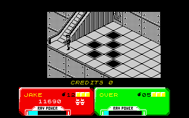

|
 |
Almost surely the winner of the coveted 'Game With The Longest Name' award
(it's only second to Star Trek: The Next Generation - A Final Unity as
far as this reviewer is aware) (but only because this reviewer doesn't know
about The Amazing Adventures of Mr Weems and the She-Vampires -
Ed), Domark's Escape From the Planet of the Robot Monsters is a
game with a sense of period. No, not the stuff yet elegant period dress of
many a BBC 19th century drama, but that most classic of periods of the
original Buck Rogers. Does anyone out there remember the memorable
five-minute five-billion part old black and white stories, each of which ended
with a cliffhanger of Doctor Who proportions? Did anyone else spend
hours wondering how he could possibly have survived being in a car that went
over the edge of a very high cliff and ended up in a blazing fireball six
hundred feet later? Did anyone else tut and roll their eyes when the next
episode featured previously unseen footage of him leaping out of the car
before it’s doomed descent and then watch avidly for the next impossible
ending? Well, maybe none of these fates befell the man Rogers himself, but the
period was the same: heroines with seemingly infine lungs you could use as
emergency vehicle sirens, robots constructed using last month's Blue Peter
Summer Space Special, a couple of shoe boxes, some sellotape and a toilet roll
and heros with jaws so square you could do your trigonometry homework by them.
Ah, them were the days and in black and white too, which makes (deep breath)
the monochrome Escape From the Planet of the Robot Monsters on the
Speccy especially remeniscent of its purported origins.
|
|
And, at its heart, Domark's baby is a video gaming tribute to the era of
Flash Gordon and Buck Rogers which I mentioned above. Hence, if
you've never seen and loved those shows, a significant part of the game's
appeal may well be lost on you; it's a bit like playing a Star Trek
game without ever having seen the shows. But first the scene must be set, as
indeed it is by a singularly serious bloke with a pointy-rod thing who
explains to our heroes that robots have taken over a planet, capturing
hostages from among the (seemingly totally female) inhabitants. Your mission
is simple: rescue the hostages, liberate the planet and remove the robotic
threat. It's a mission open to you and a mate, if you so wish, and one which
is quite effectivley realised.
|
 |
|
 |
The game takes place in an isometric land of indoor complexes of the planet
to be liberated. These buildings are populated by evil box-robots who shoot at
you, evil round-box-robots who will punch you if they get close enough, evil
little-flying-robots and evil head things (which look alarmingly like Barney
the dinosaur). Fortunately, your bloke has his rapid-fire ray gun, a few bombs
and, more importantly, energy and lives per credit (and you only have two) to
neutralise these robotic threats; most crumble after a few hits, sometimes
leaving power-up gems for your gun. The levels are traversed using ladders,
escalators (which always need turning on) and good old-fashioned leg work
until you reach the little suspended glass vase thing which sucks you up to
the next level. There's a little tussle with a large robotic dinosaur between
you and numeric progress, but once he's dispatched (and it really is quite
embarrassingly easy) another load of isometric screens and hazzards await. The
other main aspect of the game involves finding hostages (scantily-clad ladies
working on terminals) and touching them to beam them up to your ship; perhaps
so they can make you a hot chocolate before you get back.
|
|
 |
And I'm pleased to say that it all holds together rather well. The game's
nothing if not trigger happy as much shooting is required to keep the robots
at bay long enough to get the hostages and leave the screen. The aspect of
finding the ladies adds to the game (much like real life - Ed), helping
elevate it from mindless blasting, and sometimes needing to blow up boxes to
free them from glass chambers to rescue them adds further. The flick-scrolling
nature means that you never feel overwhelmed as nothing spills over from one
screen to another, though it does make the levels feel more like collections
of screens than massive, scrolling buildings. Everything moves fluidly and
quickly, the music is basic but keeps the pace up, though some sound FX would
have been nice. It all gets tricky pretty quickly, but the game always
introduces a new idea a couple of times before it becomes necessary to
understand it, making the curve darn close to perfect. Having said that, once
you hit a certain point it all gets a bit too frantic; given the simplistic
nature of the levels, the only added challenge comes in more baddies meaning
you reach a point where there's too much going on to cope with; trickier level
design would preferable to overwhelming odds.
|
|
This just leaves one thing: the controls. You have four keys and the bomb
attack. Two keys are rotate left and right, one key is move forward and one is
shoot. At this point the designers must be thanked for not killing you if...
no, when you fall off the edge of the isometric levels, for it will happen
time and time again, even when you have the hang of them. And that's probably
the biggest bugbear: they take ages to get used to, and even then you will
still make occasional costly mistakes. Yes, it's a pretty cunning arrangement
which works pretty well once you get it, but you never quite feel to have 100%
control and they remain forever fiddly.
|
 |
 |
Escape From the Planet of the Robot Monsters was the surprise game of the
hour for me; yes, the controls are fiddly and yes, the somewhat simplistic
action was more at home in the arcade for 20p a go, but it's a game with a
real flair for its fifies origins and some serious trigger action. And, more
importantly, it was darn good fun.
|